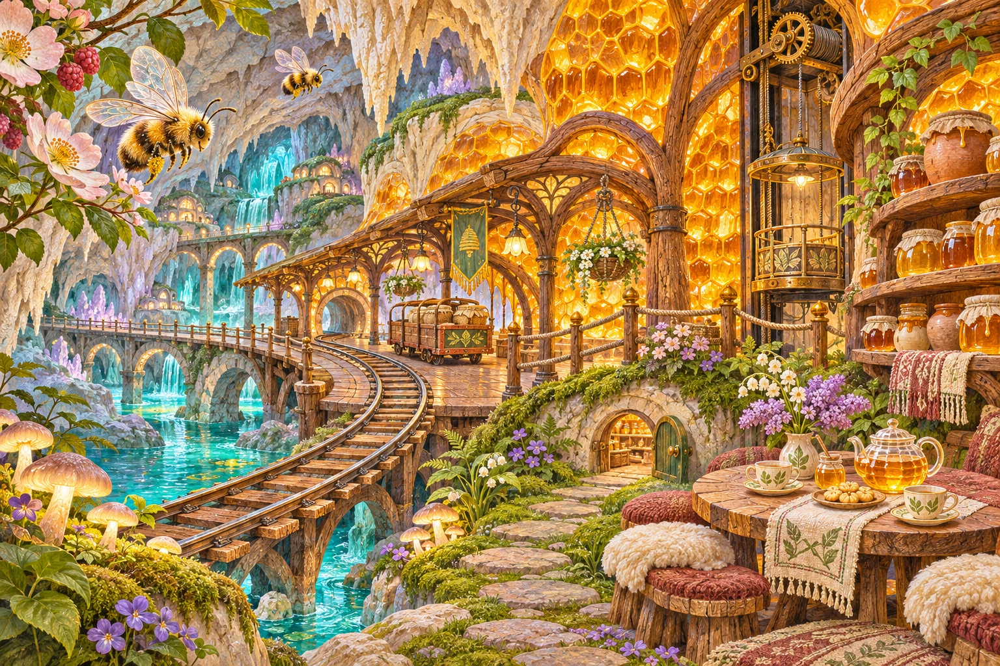
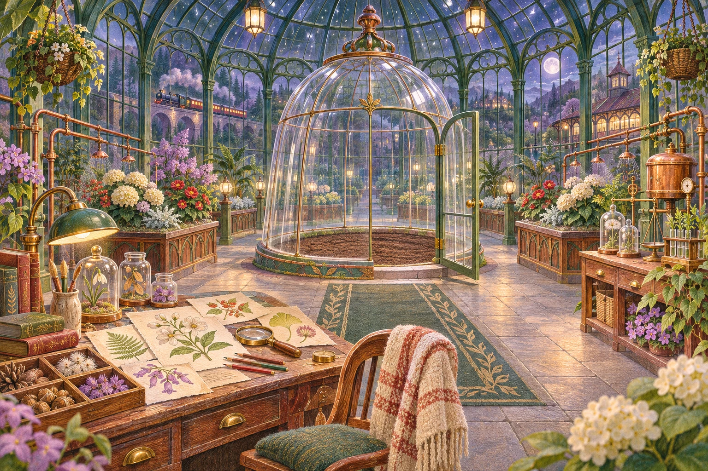
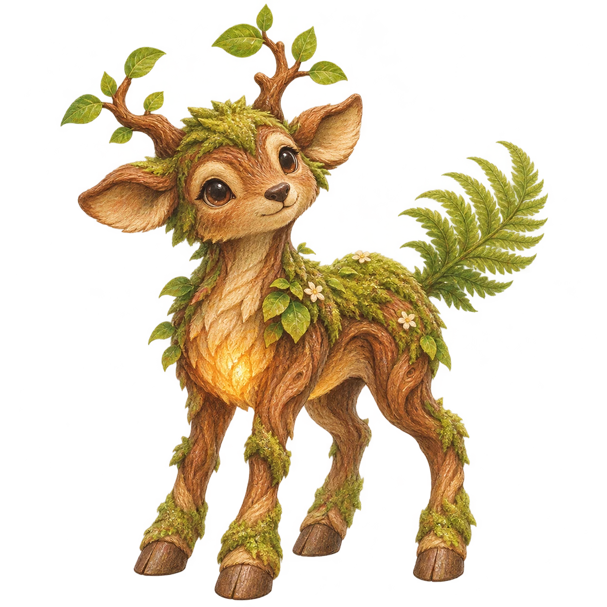
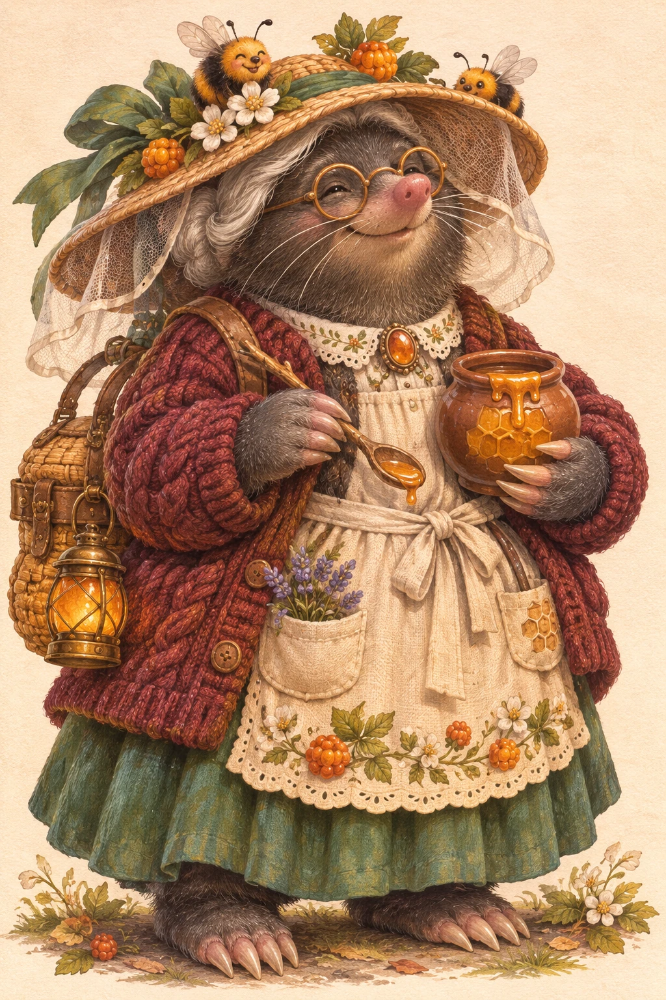
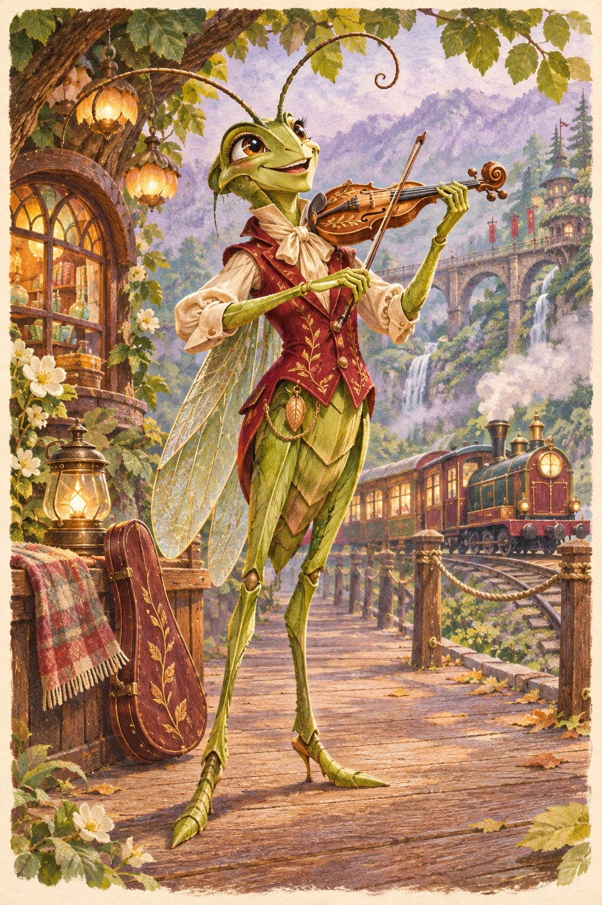

Борис Камнелист
В начале Борис берётся нести всё. У моста товарищи могут помочь ему, в грозу он выбирает, кому доверить страховку. В эпилоге назовите общий труд и вклад каждого, не одну «силу героя».
Из поезда исчезло Янтарное Сердце — груз, от которого ждут света и тепла для целой железной дороги. Следы ведут не к вору, а к маленькому лесному зверьку. Трое друзей отправляются по линии, чтобы разобраться, кому принадлежит чудо, как помочь городам и куда хочет идти само Сердце.
12 вечеров: обычно 150–210 минут, финал 180–240 минут с возможностью разделить его, эпилог 90–150 минут. Внутри каждого вечера три эпизода и перерывы каждые 40–50 минут. Общий темп подстраивается под младшего игрока без отнятия решений у остальных.
Перед игрой договоритесь о паузах и неприятных темах. Нет насилия над детьми, натуралистичных травм, обязательной гибели друга или наказания за доброту. В погоне есть страховка и безопасные площадки; поражение открывает обходной путь, а не убивает Тоша. Каждый решает за своего героя. Помощь младшему — предложение идеи, не перехват его хода. Можно сделать перерыв или пропустить сцену без объяснений.
Герои начинают на уровне 3. После вечера 5 ведущий может повысить уровень до 4, после вечера 9 — до 5 через штатный лист персонажа. Все необязательные столкновения остаются посильными исходному составу уровня 3. Сюжетные подарки не добавляют скрытых бонусов; отдых и лечение оформляются обычными правилами.
Вечера 1–2 открывают расследование. Добровольное исправление Ивы доступно в поезде с начала игры; обычно Марфа показывает его при возвращении от моста во втором вечере. Не удерживайте его ради позднего поворота. Город, пещеры и театр в 3–5 можно менять местами. В оранжерее проверяют ограниченную гипотезу об условиях роста, а не впервые разоблачают исследовательницу. После Береста игроки практически обеспечивают станции; к концу девятого вечера выбранный обычный или резервный режим уже действует. Погоня десятого вечера учитывает действительное место Тоша и состояние колокола. Одиннадцатый вечер — прогулка и обратимая проба будущего дома, без повторного совета о снабжении. Двенадцатый опирается только на реальные решения.
Не прогоняйте будущие главы как уже случившиеся события. NPC рассказывает только то, что знает. Заметка героя остаётся гипотезой, пока её не проверили. Итоги и перемещения в игре подтверждает ведущий обычными инструментами мира.
Узловые выводы имеют независимые опоры. Тош ушёл сам: внутренний замок, следы, рассказ Ри. Он живой: дыхание, новые корни, страницы Ивы. Нехватку тепла можно решить иначе: колесо Капели, зрелые грибницы Морошки, русло Береста и резерв Марфы. Если станцию пропустили, её житель может ответить обычным письмом; найденный ответ не прячется заново.
Если интерес падает, завершите ближайший маленький успех и вернитесь в тёплый вагон. По очереди предлагайте физическое действие, проверку идеи и разговор; не закрепляйте эти роли за детьми или взрослыми. Обычная сцена занимает 30–55 минут, затем пауза.
Провал: назовите конкретное изменение, сохраните доступ к основной улике и предложите новый подход. Поражение в необязательном бою — безопасное отступление. Оно не создаёт автоматического исцеления: отдых и лечение применяются штатно.
В начале Борис берётся нести всё. У моста товарищи могут помочь ему, в грозу он выбирает, кому доверить страховку. В эпилоге назовите общий труд и вклад каждого, не одну «силу героя».
Дайте Нике возможность признать маленькое преувеличение без потери дружбы. В середине она находит точное доказательство; в конце письмо о путешествии может быть честным и всё равно невероятным.
Яра может принять заботу команды во время ночного рейса. В финале ей не нужно выбирать между спасением всех и провалом: она распределяет работу и спрашивает самого Тоша.
Выберите один опыт на ранней станции и возвращайтесь к нему. В эпилоге последнюю страницу можно оставить для следующего вопроса: завершённая работа не отменяет любопытства.
Квесты приложения отмечают осмотры и встречи. Они не объявляют ремонт выполненным, доверие восстановленным или финал счастливым. Эти изменения вводите после реального решения за столом.
Перед чтением вступления сверьте место героев, присутствующих людей и предметы с итогом прошлого вечера. Если условия встречи отпали, сыграйте последствия там, где находится партия. Событие по расписанию может произойти за кадром. Герои узнают о нём от тех, кто был на месте.
Оставьте обратный билет у Тоша. Спросите, согласен ли он договориться только о ближайшей ночёвке. В двенадцатом вечере покажите письмо из уже выбранного места или пустой конверт, если Тош просил времени и пока не писал.
Не повезём Сердце. Останемся у ручья с Ри и проверим, почему здесь пропадает вода. Расчищаем с Ри воду у ручья и ждём, пока она пойдёт ниже. Поезд уходит по расписанию. Мы чистим ручей вместе с Ри; пассажиры уезжают без нас, а за Сердце мы ничего не обещали.
Осмотрим дверцу с обеих сторон и сравним янтарь в колыбели с корешком. У ручья присядем поодаль и дадим обитателю самому подойти. Доступные свидетельства — Внутренняя защёлка, Свежий корешок. Дверца открывалась изнутри. Янтарный рост у воды даёт причину искать живого спутника и спросить у него, чего он хочет. Отходим от тропы и даём Тошу выбрать дорогу, оставив билет ему. Когда Тош выходит и сам выбирает, за кем идти, прекращаем поиски похитителя. Просим станции дать ему право уходить с поезда. Если он уйдёт, у окна оставят пустую чашку.
Садовники закрывают багажный проход, поезд с вещами уходит. Просим Марфу отметить в накладной багаж, уехавший без нас. Идём с Марфой до следующей открытой станции пешком. Спасённый ручей остаётся нашим делом; багаж догонит нас только с обратным рейсом.

Сделать героев друзьями за столом, расследовать исчезновение и самим выбрать первый шаг путешествия.
Открыть вечер
Познакомиться с Тошем через действия, помочь мосту и понять разницу между заботой и владением.
Открыть вечер
Показать реальные нужды жителей, дать каждому практическое дело и обнаружить, куда уходит часть общего топлива.
Открыть вечер
Открыть первую настоящую альтернативу общему источнику тепла и услышать маленькую станцию своим голосом.
Открыть вечер
Дать команде запоминающийся совместный праздник, проверить собственный выбор Тоша и найти след ранних исследований Ивы.
Открыть вечер
Проверить ограниченную гипотезу о росте на открытом опыте, отделить научную ошибку от решения удерживать живое существо и получить конкретные условия будущей прогулки.
Открыть вечер
Собрать союзников без волшебного единодушия, узнать причину нехватки смолы и дать героям тихую личную сцену.
Открыть вечер
Дать сильную встречу с живым чудом, подтвердить природу Тоша и открыть несколько будущих путей вместо одной предписанной судьбы.
Открыть вечер
Практически обеспечить станциям действующий обычный или резервный режим до грозы и передать ежедневную работу следующей смене.
Открыть вечер
Остановить опасный рейс и сохранить достигнутые договорённости. Дать каждому герою отдельное полезное действие в общей сцене.
Открыть вечер
Пройти реальный маршрут к будущему дому, заметить собственное предпочтение Тоша и проверить, что он может свободно уйти и вернуться.
Открыть вечер
Вернуться к знакомым местам, увидеть последствия и завершить личные истории всех игроков без обязательного нового кризиса.
Открыть вечер
Знает каждого постоянного пассажира и проверяет, удобно ли устроились даже зонты.
Хочет: Довезти людей домой и показать, что надёжная дорога умеет менять план.
Голос: Короткие уверенные фразы, после которых следует совершенно серьёзная смешная подробность: «Мост осмотрим. Зонт, пожалуйста, не обгоняйте».
Граница: Не заставляет героев отдавать Тоша и не рискует пассажирами ради расписания. Предупреждает о настоящих последствиях задержки без угрозы гибели.
Скрытое: Когда-то она отправила рейс вовремя, хотя работники просили ещё час на отдых. Никто не пострадал, но дружба с бригадой стала холоднее. Теперь она боится снова принять расписание за главное.
Когда раскрывать: В ночном вагоне, если герои сами заговорят об усталости или спросят, почему она так внимательно предлагает паузы.
Предлагает: Поезд как общий дом, понятное описание путей и помощь с одним практическим действием по просьбе игроков.
Изменение: В финале может вписать в расписание постоянную остановку, предложенную героями, и честно подписать общее решение своим именем.

Придумывает путешествующим бутербродам названия и очень старается выглядеть незаменимым сотрудником.
Хочет: Вернуть себе доверие и получить право задавать вопросы, когда инструкция кажется неправильной.
Голос: Начинает быстро и деловито, потом поправляет собственную фразу. «Груз не трогал. То есть чехол трогал. Но изнутри там кто-то дышал!»
Граница: Не признаётся в краже, которой не совершал. Может признать снятый наружный чехол и помочь восстановить последовательность событий.
Скрытое: Он сначала промолчал о чехле, потому что у него последний испытательный день. Пятно варенья — след еды, а не доказательство кражи.
Когда раскрывать: После спокойного вопроса и обещания проверить факты; бросок не нужен. Если его обвиняют, он требует присутствия Марфы и всё равно рассказывает наблюдения.
Предлагает: Почтовые связи, помощь с адресами и быстрый путь через служебный проход, если герои попросят.
Изменение: Научится говорить «я не знаю» и записывать замеченное до того, как придумает красивое оправдание. Судьбу работы решает разбор фактов, не один бросок убеждения.

Нюхает незнакомые вещи, повторяет простые мелодии и приносит друзьям листья, похожие на их шарфы.
Хочет: Найти место, где можно расти, и самому выбирать, рядом с кем оставаться.
Голос: Шорох листьев, тихое «тум», короткий повтор знакомого напева. Понимание показывается действием, не длинной человеческой речью.
Граница: Не источник подсказок ко всем загадкам. При страхе отходит к воде или знакомому человеку; доброта не делает его собственностью команды.
Скрытое: Он не понимает, почему другие называют его Сердцем и обсуждают как груз. Он способен показать страх закрытой дверцы и радость от свободного прохода.
Когда раскрывать: Это раскрывается в поведении с первого знакомства, если герои наблюдают. Настоящую биологическую природу подтверждают независимые записи Ивы и рассказ Береста.
Предлагает: Компания, маленькие безвредные чудеса роста и честная эмоциональная реакция. В бою не действует как бесплатный сильный союзник.
Изменение: Осваивает знак «да», знак «не сейчас» и собственный выбор места. Имя и любимый ритуал могут придумать игроки; финал не требует его смерти или исчезновения.

Внимательно слушает листья через маленький деревянный раструб и умеет объяснить сложное на примере обычной чашки.
Хочет: Исправить неверное описание Сердца и снова иметь право доверять собственной работе.
Голос: Точные слова, карандаш на краю страницы. «Исправление я уже отправила. Теперь проверьте, где мой новый вывод опять слишком смелый».
Граница: Не может потребовать прощения за полезное признание. Отдаёт оригинальные записи; игроки решают, как оценить её поступок.
Скрытое: Причиной неполного отчёта были срок и грант; это её решение. Она добровольно назвала его в письме до начала путешествия. Неизвестным остаётся, какие условия роста можно перенести из опытов с обычными сеянцами на молодого лесовика.
Когда раскрывать: Исправление лежит в открытой папке Марфы с начала игры и выдаётся при осмотре либо разговоре без проверки. При первом личном знакомстве Ива подтверждает письмо и предлагает проверить опыт; не разыгрывайте второе отложенное признание. Если герои не получили письмо, она сразу отдаёт его копию.
Предлагает: Оригинальные записи, подписанное исправление, журнал наблюдений и открытый опыт. Она помогает оценить условия дома, но не выбирает его за Тоша.
Изменение: Учится ограничивать выводы наблюдаемыми фактами и принимать независимую проверку. Она может исправить следующую ошибку в опыте на глазах у героев; это не требует их прощения.

Финансирует новую ветку и обещал городам стабильное тепло. Показывает счета и нужды мастерских охотнее, чем говорит о себе.
Хочет: Выполнить обещание городам и не признать, что его удобный план построен на чужом молчании.
Голос: Вежливые законченные предложения, точные числа, редкая усталая шутка. «Я не прошу любить мой проект. Я прошу показать, чем греть дома».
Граница: Не угрожает детям, не казнит спутников, не устраивает бессмысленную бойню. Если Тош под охраной героев, не получает его за кадром. Может спорить, торговаться, вызвать служащих или отступить.
Скрытое: Он заранее подписал распоряжение перевозить колокол на Поляну и оформил согласие станций общей формулировкой, хотя жители не обсуждали удержание живого существа. Это не поддельные подписи, а сознательная подмена предмета соглашения.
Когда раскрывать: Переписка и разговор с подписавшими жителями раскрывают подмену. Вельт не теряет разум от улики: сначала защищает трактовку, затем вынужден обсуждать конкретные условия.
Предлагает: Материалы, рабочую бригаду и резервные перевозки в обмен на проверяемый план. Его помощь не покупает право запирать Тоша.
Изменение: Может исправить документы, оплатить ручей и открыто разделить ответственность. Если отказывается, жители приостанавливают его распоряжение, а Марфа организует временный режим. Доверие не восстанавливается одной красивой речью.

Хозяйка медовых погребов, умеет отличить тихую просьбу от громкого приказа.
Хочет: Чтобы её маленькую станцию слышали до того, как решат за неё.
Голос: Мягко, с хозяйственной точностью. «Мёд берут ложкой. Обещания тоже неплохо сначала попробовать понемногу».
Граница: Не отдаёт весь урожай, оставляя соседей без еды. Готова обсуждать разумную долю и совместный труд.
Скрытое: Она могла раньше заметить несоответствие заявки, но не стала спорить на шумном собрании. Теперь хранит свою копию и хочет говорить сама, не через спасителей.
Когда раскрывать: При сравнении документов или спокойном чаепитии. Не превращайте признание в обвинение пострадавшей станции.
Предлагает: Тёплые грядки, еду в дорогу, образцы почвы и ясную просьбу к другим станциям о рабочих руках.
Изменение: В эпилоге сама ведёт разговор о нуждах своей станции и приглашает героев гостями, а не постоянными решателями всего.

Строит лодки и чинит водяные колёса. Над её мастерской дождь звучит как барабанная дробь.
Хочет: Доказать полезность маленьких местных решений и вернуть жителей к общему делу.
Голос: Бодро, через конкретные предметы. «Вот вода. Вот колесо. А вот обещание, которому пока не хватает одной лопасти».
Граница: Не принимает безответственный спуск по опасным каналам. Предлагает страховку и не стыдит отказ от прыжка.
Скрытое: После недавней неудачи она скрывала, что для ремонта ей нужен помощник. Теперь устала доказывать, что справится одна.
Когда раскрывать: Если герои предлагают совместную работу или замечают подготовленные инструменты для двух человек.
Предлагает: Сравнение следов, лодку с объяснением правил, помощь с мостом и действующий план водяного колеса.
Изменение: Вместе с Борисом или любым героем может научиться заранее звать помощников. В финале мастерская получает постоянный общий день ремонта.

Руководит театром, где громкое соло ценят меньше, чем услышанного партнёра.
Хочет: Собрать спектакль, в котором каждому есть место, и перестать путать хорошую подготовку с безупречностью.
Голос: Короткие музыкальные сравнения и смешно торжественные поклоны. «Пауза — тоже партия. Только вступите в неё вовремя».
Граница: Не заставляет застенчивого игрока выступать. Художник, осветитель, наблюдатель и зритель могут влиять на вечер одинаково.
Скрытое: Он годами держал незаконченную пьесу, боясь показать несовершенный финал. Отказ от единственного идеального результата для него личная тема.
Когда раскрывать: После маленькой общей импровизации или когда Орен расскажет о незаконченной работе.
Предлагает: Безопасное представление, внимание к сигналам Тоша, паруса и бригаду для временной теплицы.
Изменение: Позволит сыграть несколько разных концовок пьесы и оставит в афише место для историй, которые ещё продолжаются.
Отдыхает в Долине, иногда медленно меняя место, чтобы молодым деревьям хватало солнца.
Хочет: Вернуть воду своей роще и дать новому лесовику право на собственный путь.
Голос: Редкие простые слова, долгий шорох между ними. Не мудрость на каждую тему, а опыт того, кто долго рос. «Я был маленьким. Это не делает меня тобой».
Граница: Не отдаёт всю смолу, не гибнет ради молодого, не объявляет Тоша обязанным остаться с ним. Не знает человеческих договоров и не выбирает за игроков.
Скрытое: Он сам когда-то долго путешествовал прежде, чем вырастить первую рощу, и ошибался с местом. Сохранившийся сухой сучок на боку — память об ошибке, не болезнь.
Когда раскрывать: Если спросить о его первом доме или выразить тревогу, что у Тоша только один верный выбор.
Предлагает: Знание условий роста, доступ к ручью и опыт исправления ошибки. Возможная смола — последствие заботы и его решения, не гарантированная награда за послушание.
Изменение: Может снова приходить к станции после восстановления воды. В эпилоге спросите, какой знак он оставил героям на тропе, не объявляя себя их всемогущим покровителем.
Записывайте после вечера: какие факты узнали; кому что обещали; что изменили; кого пригласили; что осталось открытым. Эпилог строится по этим записям. Не выдавайте предполагаемый успех за случившийся.
Схема показывает связи для подготовки. Свежие адреса и названия вводятся в рассказ тогда, когда герои их узнают. Рейсы и пешие переходы можно переставлять; записывайте, где находятся герои и Тош.